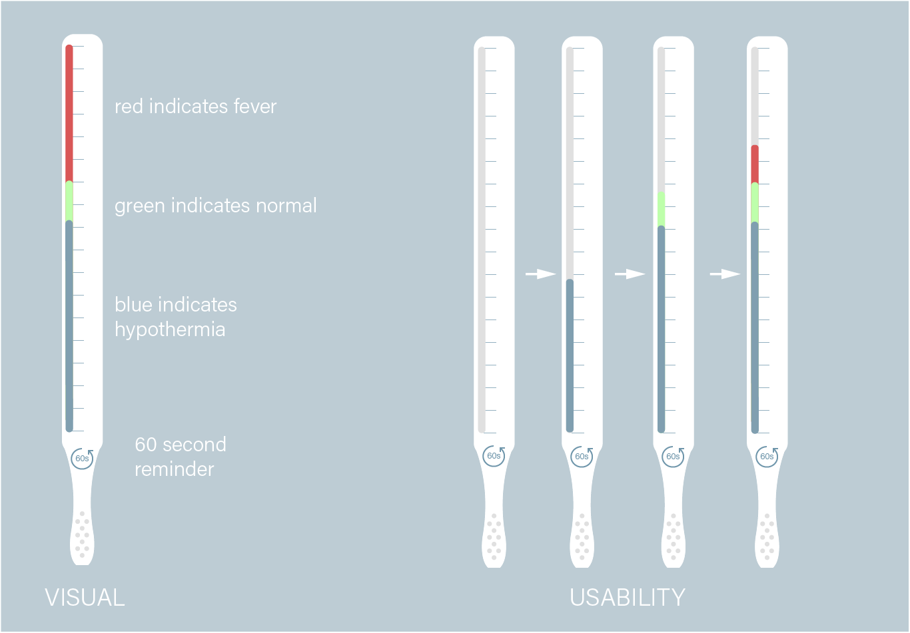
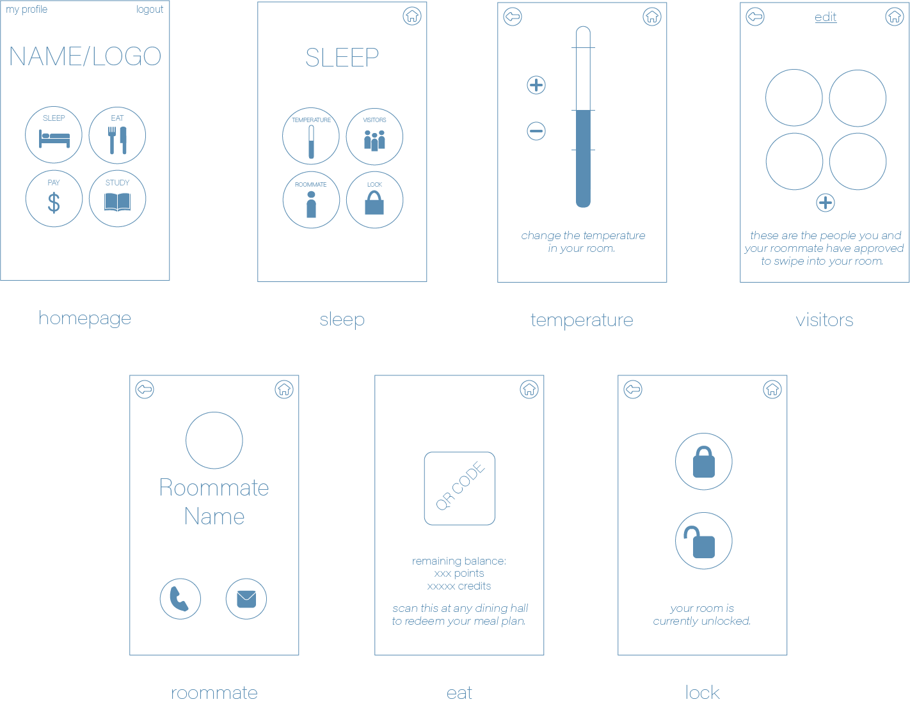
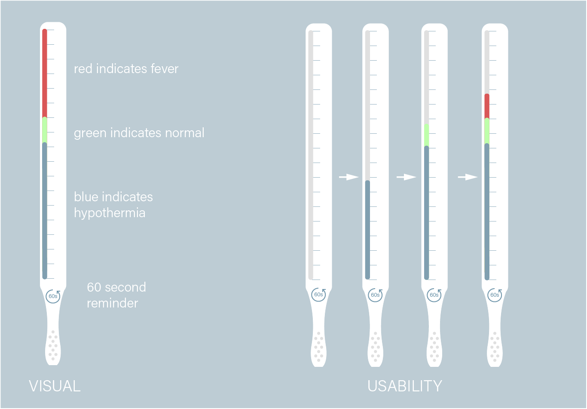
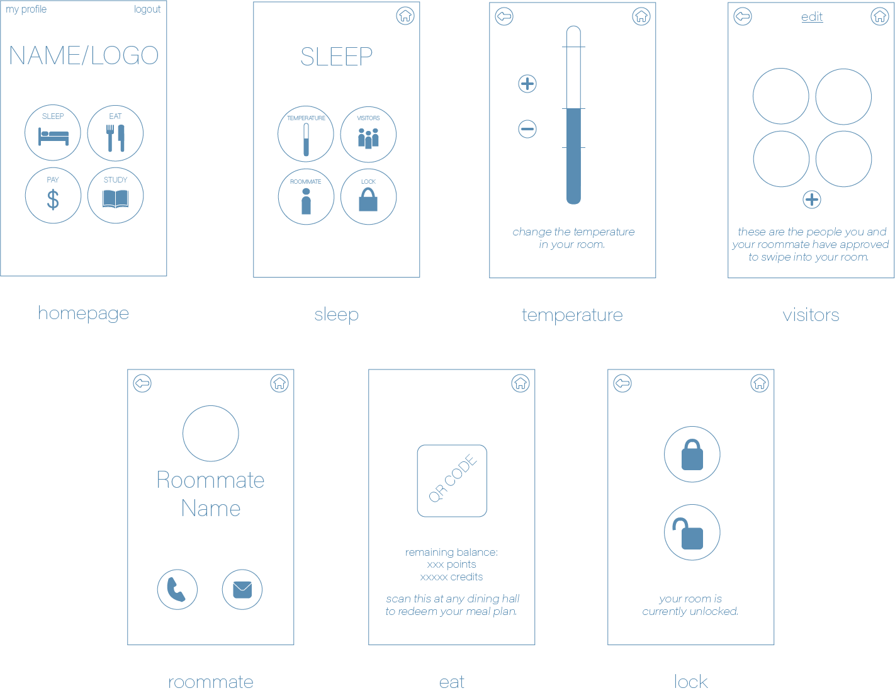

Designing for Accessibility
Several of the assignments called for a redesign of useful everyday objects, such as redesigning for a mouse without click, or redesigning an object that you use. I chose to concentrate on accessibility and ease for multiple users in my studies.
 Redesign for a mouse without a click ability. Also useful for devices beyond mouses/touchpads.

I was sick and using some disposable thermometers, and found that they could really use a more understandable and friendly-looking redesign. I gave it a try, indicating to the user some easy-to-understand markers so they would be able to use the thermometer without much confusion.

This is a wireframe I did for my part in a group final project. We decided to design an app for Brown students that would make campus interactions much more accessible, and not as spread out as they currently are.
Redesign for a mouse without a click ability. Also useful for devices beyond mouses/touchpads.

I was sick and using some disposable thermometers, and found that they could really use a more understandable and friendly-looking redesign. I gave it a try, indicating to the user some easy-to-understand markers so they would be able to use the thermometer without much confusion.

This is a wireframe I did for my part in a group final project. We decided to design an app for Brown students that would make campus interactions much more accessible, and not as spread out as they currently are.
return